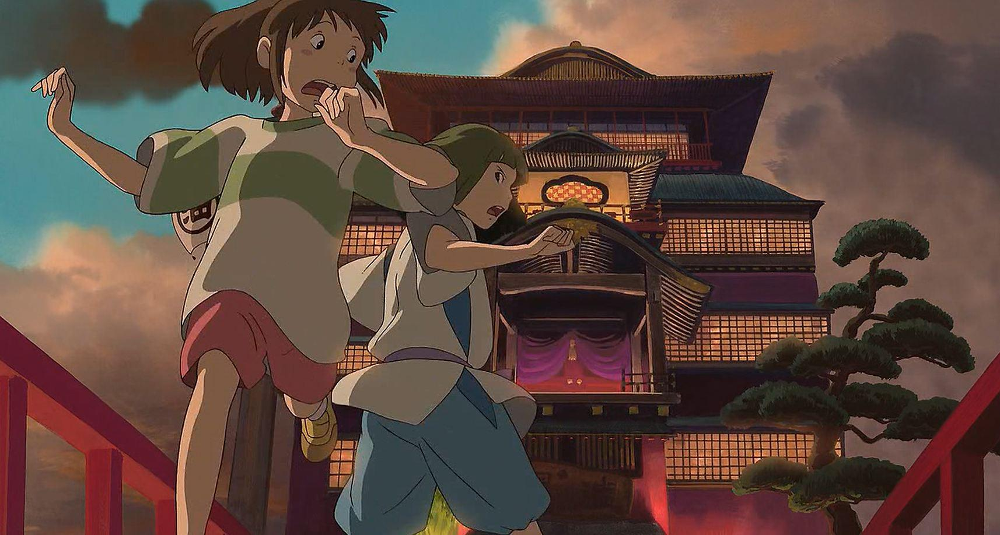

Magical is a word used casually about films like this, films about fantasy and childhood. Yet this one really does deserve it: an enchanted and enchanting feature from the Japanese animator Hayao Miyazaki which left me feeling lighter than air. It is a beautifully drawn and wonderfully composed work of art - really, no other description will do - which takes us on a rocket-fuelled flight of fancy, with tenderly and shrewdly conceived characters on board.
Before this movie, I was agnostic about Miyazaki and his world-renowned Ghibli studio; I couldn't join in the mass hollering of superlatives that greeted the release of his Princess Mononoke last year. That was striking and distinctive, but I found the kaleidoscope of visual images oddly depthless and psychologically uninvolving and the Japanimated moppet faces an acquired taste. Even now, my euphoria after seeing Spirited Away is soured a smidgen by reading comments by some of its more supercilious cheerleaders, who affect to adore it at the expense of "America" and "Disney": thus fatuously denigrating a great animation tradition to which Miyazaki is patently, and honourably indebted.
There are actually many Western influences and resemblances: Homer's Odyssey, Lewis Carroll, L Frank Baum and maybe even The Secret Garden by Frances Hodgson Burnett. But it's undoubtedly in a class and genre of its own: its alien, exotic qualities, all the more intense for a non-Japanese audience, are part of how extraordinarily pleasurable it is to watch.
Miyazaki begins with a very real picture of family life: a mother and father in the front of their gleaming Audi saloon - daddy gloats over his vehicle's four-wheel drive - are heading for a new home in the provinces. In the back, hunched and scowling, is little 10-year-old Chihiro, utterly miserable about leaving behind all her friends. An only child, whose hurt feelings are treated fairly brusquely by these well-to-do professional parents, Chihiro is scared by the feelings of loneliness that are creeping up on her. Forlornly, she clutches a dying bunch of flowers she has apparently been given as a farewell gift by her old friends, and is overwhelmed with grief and despair. "My first bouquet - and it's spoiled," she moans, discomfiting her parents with this precocious sense of her future, adult prerogatives.
Chihiro's family gets lost in a strange, secluded woodland. They park the car, and walk through a tunnel carved in a red sandstone edifice to emerge in what the father airily announces must be a deserted theme park. Chihiro watches in horror as they then tuck in to a buffet mysteriously laid out for them and turn into a couple of fat, slobbering pigs; Chihiro finds herself a wanted human fugitive in a divine bathhouse-cum-recreation-zone: "a place where eight million gods come to rest their bones". The crone priestess and proprietress of this psychedelic R'n'R area is Yubabu, whose employees must all sycophantically greet their god-customers: magnificent creatures of all shapes and sizes. She is obliged, according to her own rules, to tolerate Chihiro as long as she is prepared to do useful work. So she is made to scrub out a huge tub, preparing for the arrival of a noisome slime-monster, a Jabba the Hut lookalike. In all this, Chihiro is helped by her only friend, a slightly older boy called Haku; it is he who must teach her how to survive and restore her parents to human form.
There is just so much going on in this story that it's impossible to sum up. But it had me utterly involved from the very start, and that's down to the mind-bogglingly superb animation that, for me, had a human and psychologically acute element to add to the expected dimension of hallucinatory fantasy. It's this that makes the claim of "masterpiece" so plausible - that, and the wit, playfulness and charm that Miyazaki mixes into the proceedings.
Spirited Away is the result of organic, non-GM animation: everything is hand-drawn before being digitalised. Yet it has a dazzling quality that I have come to associate solely with the new generation of animators and FX stylists, a fleetness and lightness in the way it switches from the close-up on a deft little sight gag or a sweet character observation, sweeping out for a breathtaking panorama of an extraterrestrial landscape imagined with passionate detail and specificity. I can't think of a film that is so readily able to astonish and wears that ability so lightly and insouciantly.
Spirited Away couldn't be more different from, say, Shrek - another masterpiece that Ghibli enthusiasts patronise at their peril - and yet the out-of-this-world visual inventions of Spirited Away have the same gasp-inducing quality, but achieved without its hi-tech sheen and glitz. The scenes of Yubabu's palace complex seen at dusk across water, at sunrise through the mist, or in moonlight or sunlight made me purr with pleasure. And the compositions of Miyazaki's scenes in a bright flower garden are sublime in their forthright, untarnished innocence.
This remarkable film - finally released here two years after it was made - first entranced European audiences at the Berlin film festival. It is available in two versions: the Japanese original with subtitles, or, if you really want, dubbed with American voices. To those who prefer a dubbed version, I can only say that like screwtop wine, it might turn out to be all right. But why compromise the pleasure of this film with an error of taste as silly as that? Spirited Away is fast and funny; it's weird and wonderful. Mostly wonderful.
|  |